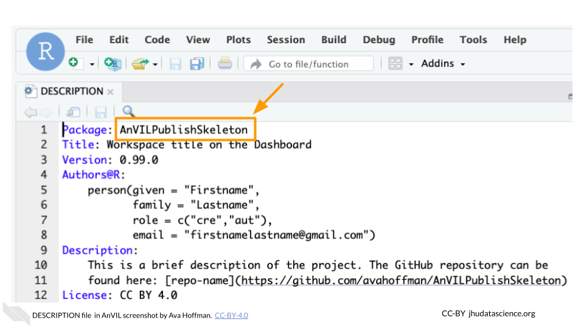
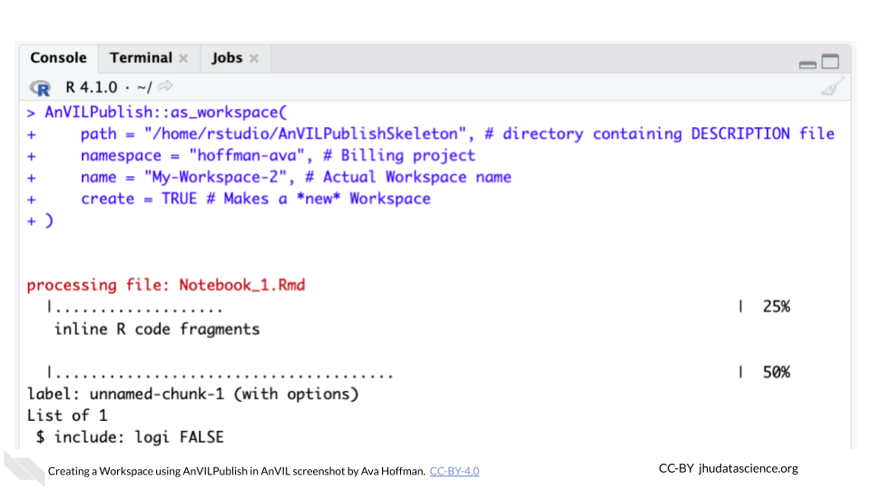
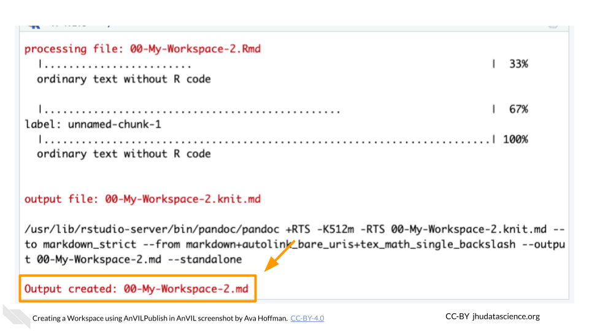
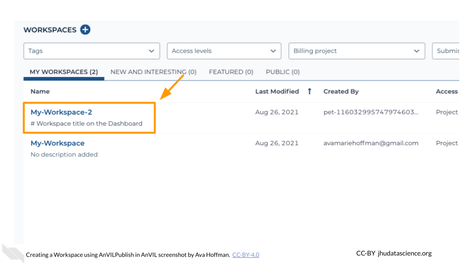
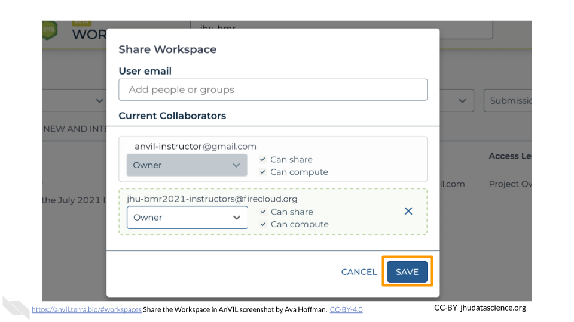
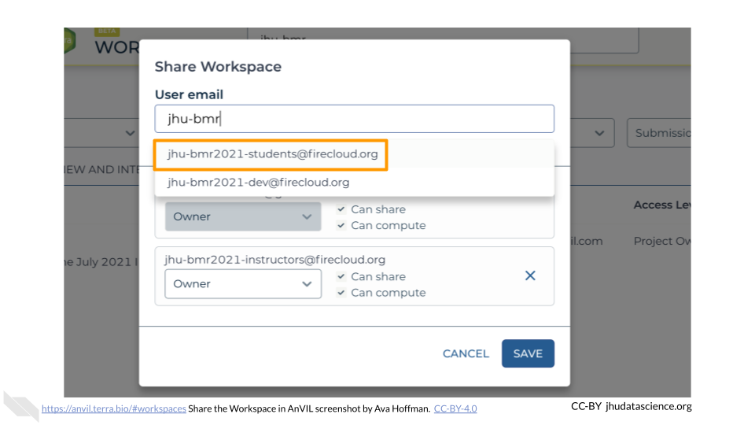

Chapter 9 Developing your own content
This chapter will show you how to publish a Workspace on AnVIL using RStudio. Publishing Workspaces programmatically makes it easier to incorporate version control (e.g., using git) and ensures that all of your notebook files end up in the Workspace.
Much of the information in this section comes from the AnVILPublish vignette, which can serve as an additional reference.
Notify Terra
Contacting Terra ahead of your class time helps the Terra team avoid any major disruptions to your class. Contact Terra by submitting a request for a hold on scheduled maintenance and downtime. It’s also a good idea to ask about major changes planned for the time prior to your class.
9.0.1 Before You Start
You need to set up Billing. This includes your Google Billing Account and Terra Billing Project. Take note of your Terra Billing Project name.
Create your first Workspace. A first Workspace is needed to launch RStudio, but after that, all Workspaces can be made programmatically from within other Workspaces.
Launch RStudio using the Community-Maintained RStudio Environment. This requires you to be familiar with RStudio on AnVIL.
9.1 Set Up AnVILPublish on AnVIL
9.1.1 Install AnVILPublish
Install AnVIL and AnVILPublish. Don’t worry about loading it for now. Tip: hover over the top-right corner of the box below to copy the code.
9.1.2 Install notedown
Next, navigate to the RStudio Terminal and install notedown using pip3. This module converts markdown documents into .ipynb notebooks.
Return to the RStudio Console. RStudio doesn’t automatically know where to look for notedown. Add the notedown installation to your RStudio PATH:
# Add to PATH
existing_path <- Sys.getenv("PATH")
notedown_path <- "/home/rstudio/.local/bin"
Sys.setenv(PATH = paste(existing_path, notedown_path, sep = ":"))Confirm that notedown is ready to use:
You should see the version number printed to the console:

9.2 Create Workspace Structure
9.2.1 Identify Your Repository
You need a folder with content to get started. In the next step, this will be the basic structure of your files:
AnVILPublishSkeleton
|-DESCRIPTION
|-LICENSE.md
|-NAMESPACE
|-README.md
|-vignettes
|-Notebook_1.Rmd“AnVILPublishSkeleton” is the name of the folder containing all of your information. The folder must contain a DESCRIPTION file, NAMESPACE file, and a vignettes directory with at least one .Rmd file. As you develop content, you might end up with many .Rmd notebooks inside the vignettes directory. We will practice with a basic set of files that are already set up for you on GitHub.
First, you should clone the skeleton repository.
You’ll notice it contains a DESCRIPTION file, NAMESPACE file, and a vignettes directory with an .Rmd file.

9.2.2 Changing the DESCRIPTION File
Edit the information in DESCRIPTION but keep the structure the same.
Package:argument: This “package name” must match the name of the folder containing theDESCRIPTIONand other files. In this case, it should be “AnVILPublishSkeleton”.

Title:argument: This will become the header for your Workspace’s Dashboard.

Authors@R:argument: Your author information and roles. At minimum, you should include a first name, family name, a role, and an email. You can add additional authors and roles as needed. See a more detailed guide to package metadata here. The most common roles are creator (cre), author (aut), and contributor (ctb), but there are many more to choose from if none of these fit the bill.
Authors@R:
person(given = "Firstname",
family = "Lastname",
role = "cre",
email = "firstnamelastname@gmail.com")Description:argument: A several-sentence description of the project.
9.2.3 Changing Other Files
Do not edit the NAMESPACE file. The README.md file and .Rmd file(s) will be discussed in more detail in Update Dashboard.
9.2.4 Create the Workspace
Use the AnVILPublish::as_workspace() function. Replace <billing-project> with the appropriate Terra Billing Project of your choosing. Replace <My-Workspace> with the Workspace name of your choosing.
AnVILPublish::as_workspace(
path = "/home/rstudio/AnVILPublishSkeleton", # directory containing DESCRIPTION file
namespace = "<billing-project>", # Billing project
name = "<My-Workspace>", # Actual Workspace name
create = TRUE # Makes a *new* Workspace
)You will see output in the console as the function converts the .Rmd to .md. You might get some warning messages, but make sure that the Workspace was created without error:


You should now see this new Workspace at https://anvil.terra.bio/#workspaces.

9.3 Set Workspace permissions
Finally, you will want to set up permissions for co-instructors and students to see the class Workspace you created with the development Billing Project in Developing Content. AnVIL users can take on the “Owner”, “Writer”, or “Reader” role for a Workspace.
9.3.1 Add Instructors as “Owner”
You should add your co-instructors and teaching assistants as “Owners” to the class Workspace. This is useful if they need to edit the course content or share the space with students on your behalf. To share and change permissions:
Go to https://anvil.terra.bio/#workspaces and find your class Workspace you set up in Developing Content
Click the teardrop button for your class Workspace
Click “Share”. This will open a dialog box.

Enter the name of the instructor Group (e.g., jhu-bmr2021-instructors). This will create a dropdown for the Group permissions in the box. Select this Group.

Change permissions to “Owner” using the dropdown menu under the instructor Group

Click “SAVE”

This step makes it so that co-instructors can edit the original content of the Workspace as needed. While this means you and co-instructors can compute using the development Billing Project, this makes spending difficult to track. Instructors should instead clone the Workspace using the instructor Billing Project. This makes it much easier to track costs associated with this iteration of your class versus further iterations (e.g., the following semester or year).
9.3.2 Add Students as “Reader”
Next, add your students as “Readers” to the class Workspace. This means they will be able to view and clone the Workspace, but not make edits or perform computations. To share the Workspace:
Click the teardrop button for your class Workspace
Click “Share”. This will open a dialog box.
Enter the name of the student Group. This will create a dropdown for the Group permissions in the box. Select this Group.

Ensure permissions are set to “Reader” (default)

Click “SAVE”

You have now correctly set up your class permissions!
9.4 Update Dashboard
Edit the README.md file to add more details to your Workspace Dashboard page. You will use the same function you used to create the Workspace as to update it, with a small change. Instead of create = TRUE you’ll now see an argument update = TRUE. Be very careful to use the correct Workspace name here, so you don’t accidentally overwrite the wrong Workspace.
AnVILPublish::as_workspace(
path = "/home/rstudio/AnVILPublishSkeleton", # directory containing DESCRIPTION file
namespace = "<billing-project>", # Billing project
name = "<My-Workspace>", # Actual Workspace name
update = TRUE, # Updates the Workspace with your changes
use_readme = TRUE # Use README file for Dashboard Description
)You can also click the pencil button next to “ABOUT THE WORKSPACE” to edit the Dashboard manually, but these changes won’t show up later in GitHub. They will also be overwritten by other AnVILPublish updates.
9.5 Post Jupyter Notebook
The .Rmd file contains your content. You can make many .Rmd files. These will get turned into .ipynb Jupyter Notebooks when you update using AnVILPublish. After you make changes to your .Rmd files, update the Workspace by running:
AnVILPublish::as_workspace(
path = "/home/rstudio/AnVILPublishSkeleton", # directory containing DESCRIPTION file
namespace = "<billing-project>", # Billing project
name = "<My-Workspace>", # Actual Workspace name
update = TRUE, # Updates the Workspace with your changes
use_readme = TRUE # Use README file for Dashboard Description
)Note that this is the same code used to update the Workspace Dashboard. You can use this exact code to update your workspace any time you save changes in RStudio!
9.6 Push Changes to GitHub
Hosting your course’s code on GitHub will ensure that it is reproducible, easy to update, and robust to any tweaks you make. After cloning the skeleton repository, you will need to make a few changes to ensure your content ends up associated with your GitHub account. This means you own it and can make/save changes!
Briefly, you should:
Create a new repository on GitHub. Don’t add a
README.md,.gitignore, or license.Return to RStudio on AnVIL and Initialize your
.Rproj.renameandadda new origin that points to the new repository you just created.pushyour changes. Remember that you will need to use a GitHub Personal Token instead of your password.
Git can be challenging. Please reach out to our community network at help.anvilproject.org for help.